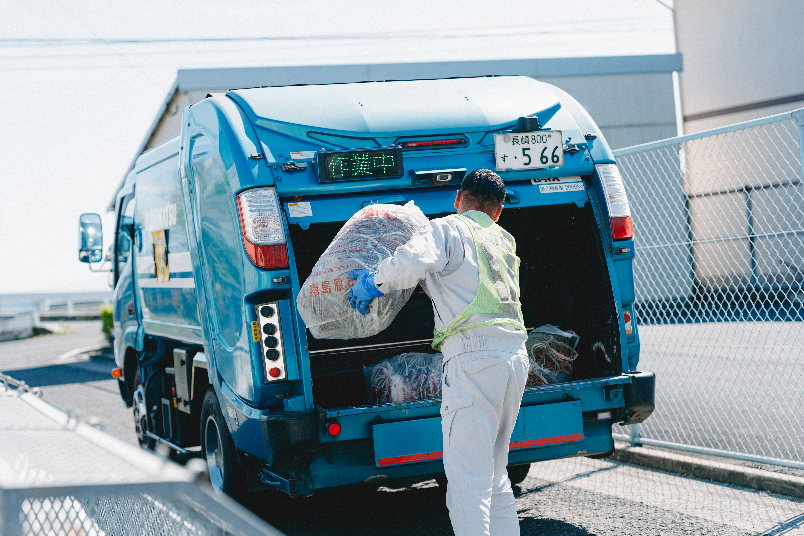
粗大ごみ回収
引っ越し、断捨離、実家の整理など、不要な家具や家電をお片付けします。
もっとくわしく »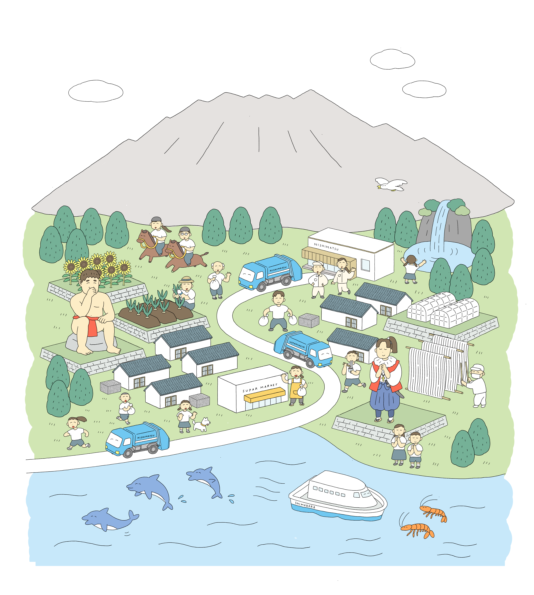
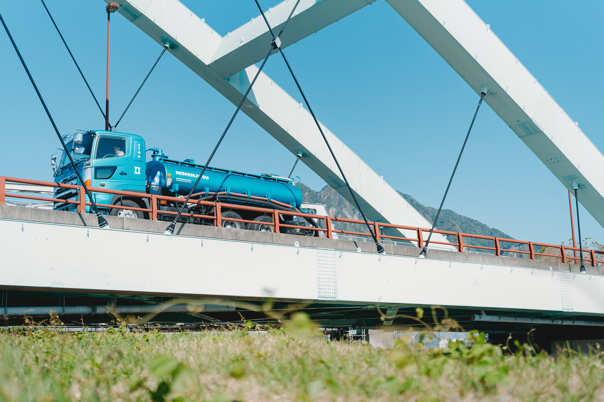
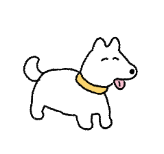
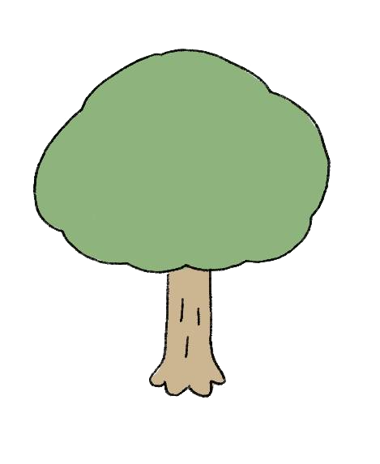
地域から出たごみや廃棄物は、すてることで終わりではなく、そこから先があります。 正しく処理されてはじめて、地域の環境と衛生的でゆたかなくらしが守られるのです。
わたしたち西松の仕事は、ごみや廃棄物を回収して、運んで、適正に処理をすること。 その積み重ねが、社会のサイクルを支え、地域の環境を守ることに、直接つながっています
ずっと受け継いでいきたい、南島原の美しい自然も、ゆたかなくらしも、持続可能な未来も。 ごみや廃棄物の適正な処理を通じて、めぐりめぐって、未来に希望をつないでいきます。
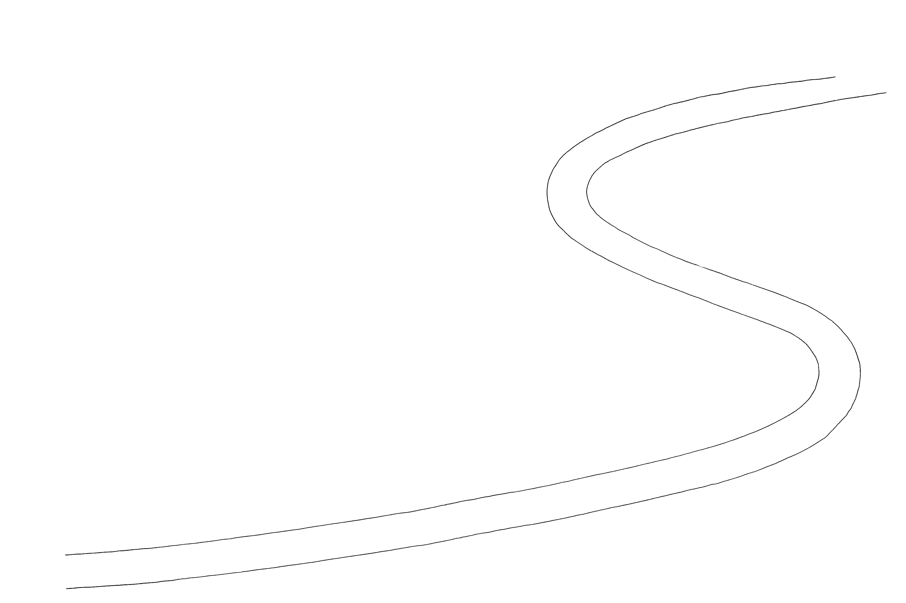
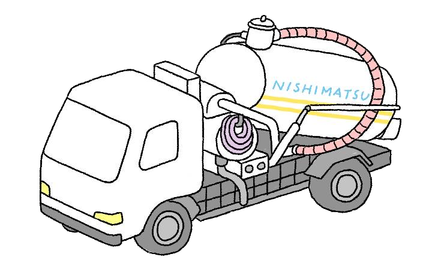
会社紹介をみる »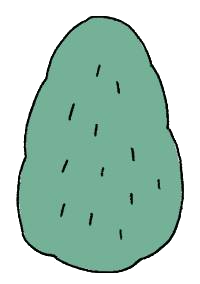
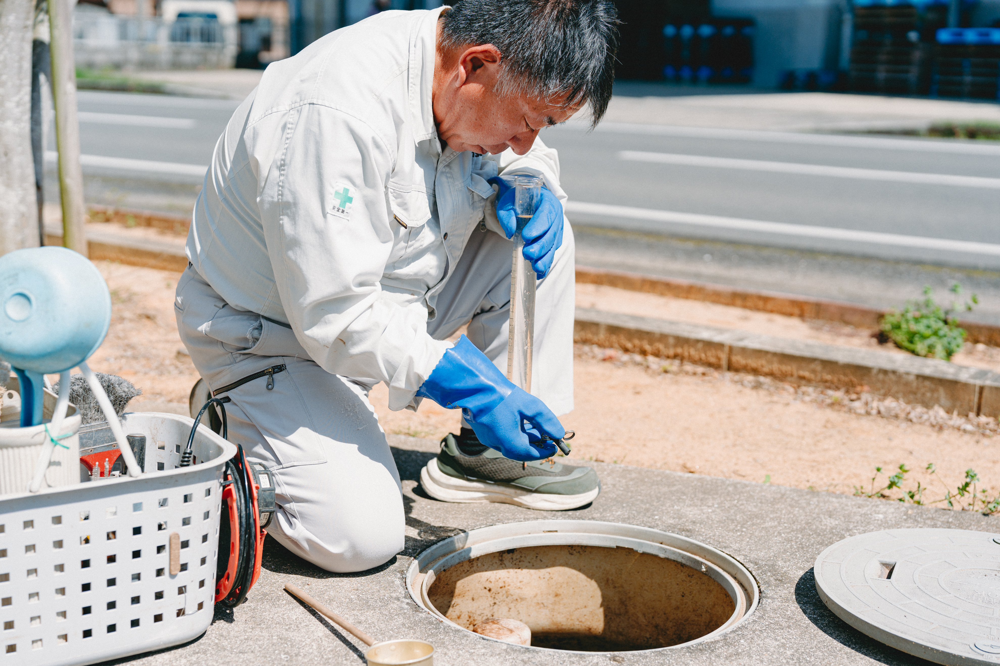
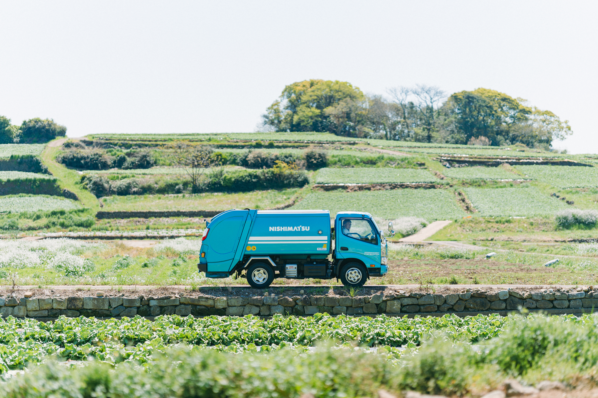
廃棄物のことで困ったら、まずはご相談ください！
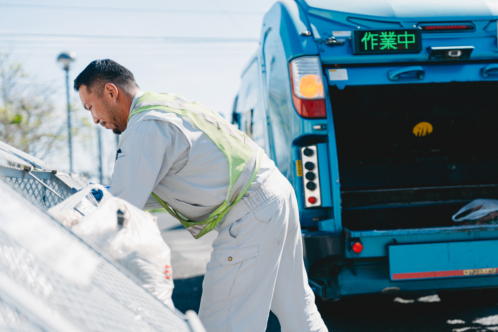
西松の仕事は、南島原のくらしに密接に関わるエッセンシャルワーカーです。先進の技術を駆使した取り組みにも力を入れていますので、気になる方はまずはお問合せください。
採用情報をみる »
西松の日々のこと、仕事のこと、
ごみの豆知識など、発信しています。
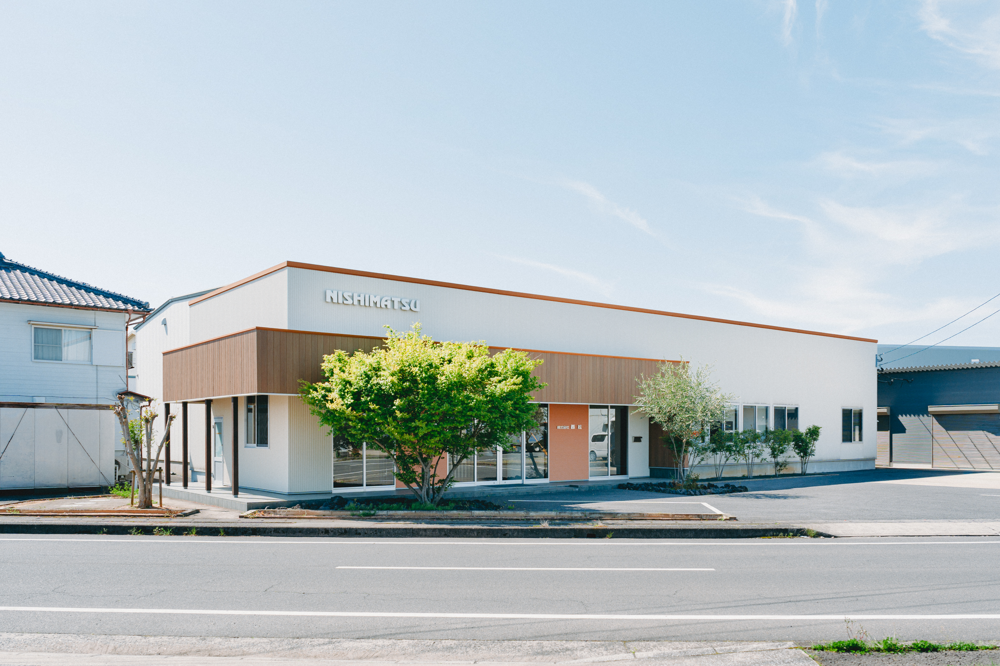
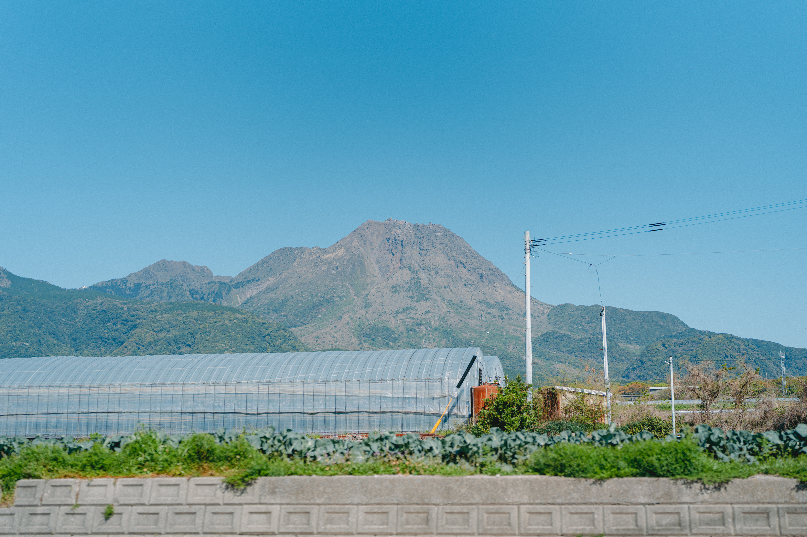
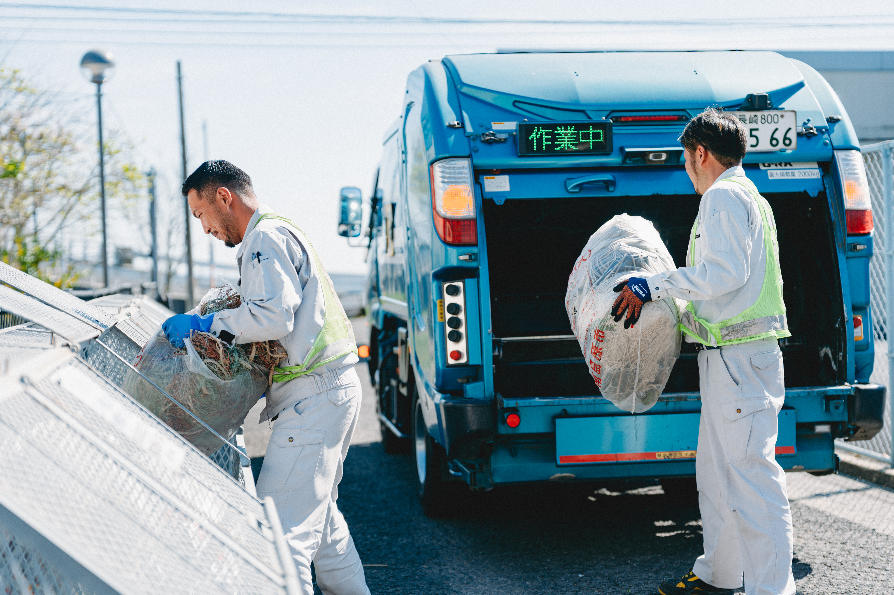
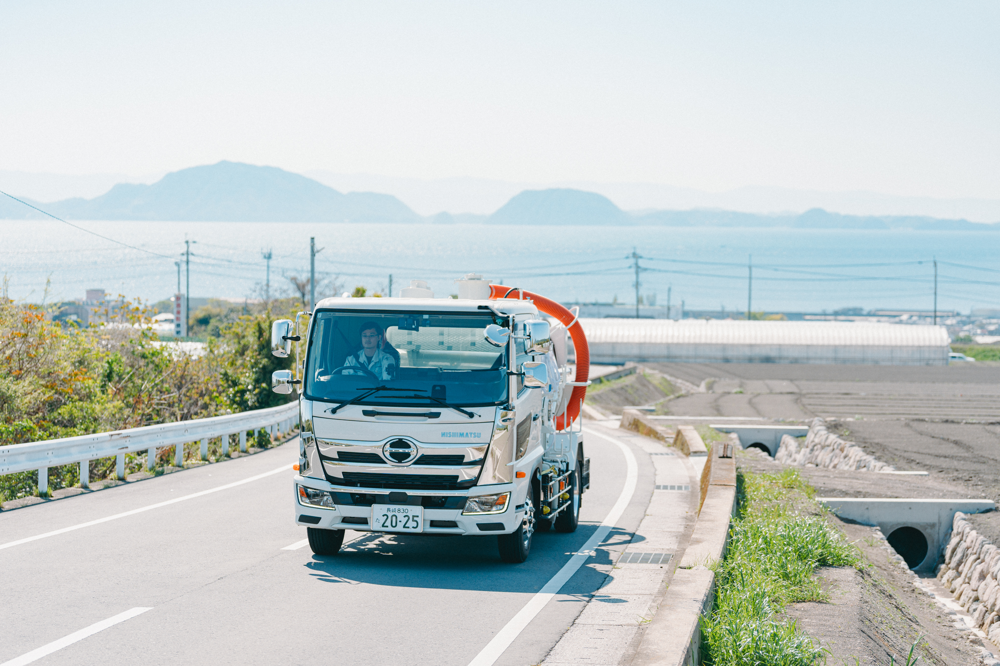
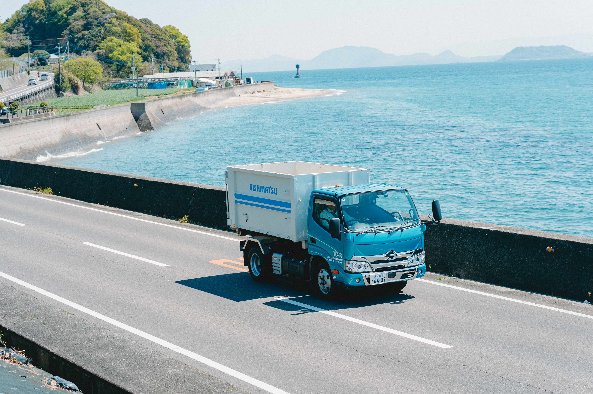
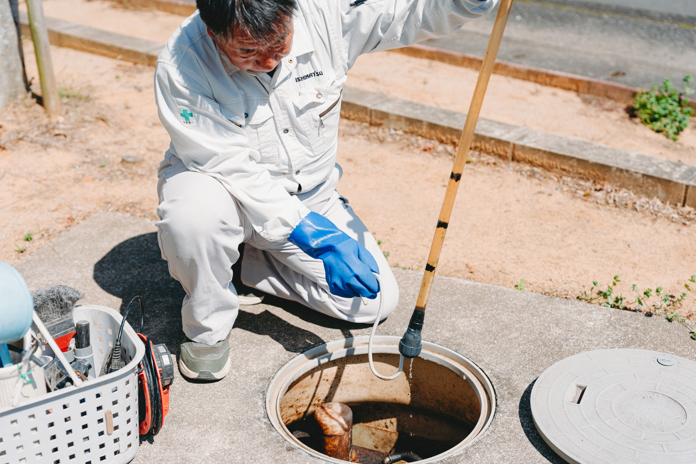